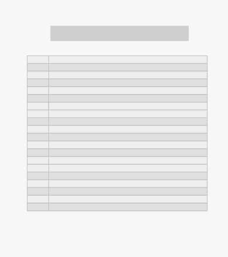
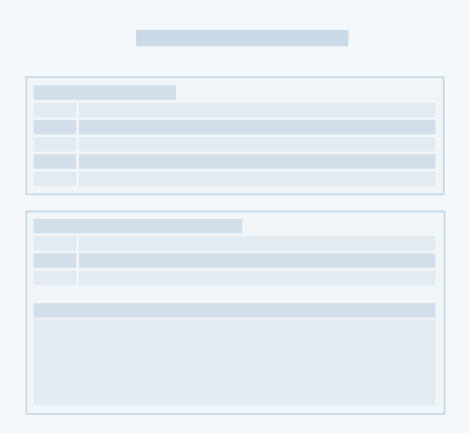
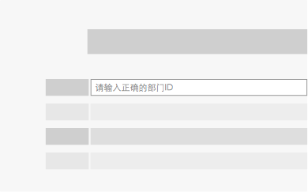
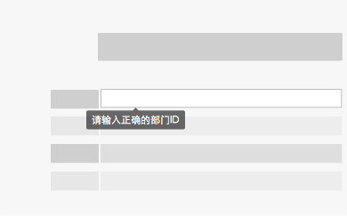
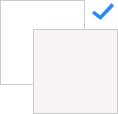
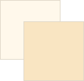

|
通常企业数据的单据复杂、紧凑，需要清晰、直观的将单据信息提供给用户，帮助他们快速准确的 完成工作。同时在设计中需要考虑到特定的需求 场景，例如对打印纸张空间的充分利用。 |
||
表单设计表单设计了三种显示方式，共用户在各种场景下能使用到最合适的 |
||
|
A、 普通输入框风格 |

B、斑马线风格 |
C、简洁风格 |
|
信息项较多时，建议根据具体的信息内容和功能来进行分类展示。共提供四种展示方式作为建议参考 |
1.分组显示：表单内容较多时，请分组显示 |
2.新TAB打开显示：表单里的详细内容过多时， 建议用新tab 打开来显示。 |
|
3.导航树显示：多个表单需要一并填写时，建议用导航树显示， 避免出错和漏填 |

4.盒子显示：当信息条目及分组都很多时，建议用盒子显示 |
|
|
用必要的帮助说明，引导用户理解和提供准确的数据项，提供2种提醒的设计建议 |

1.固定文字提醒 |

2.动态文字提醒 |
表单配色基于用户可能的基本需求：批评、表扬、单独强调等而给出六种配色；配合三种适合查阅、打印等 的显示方案共用户使用。 |
||
|  |  | |